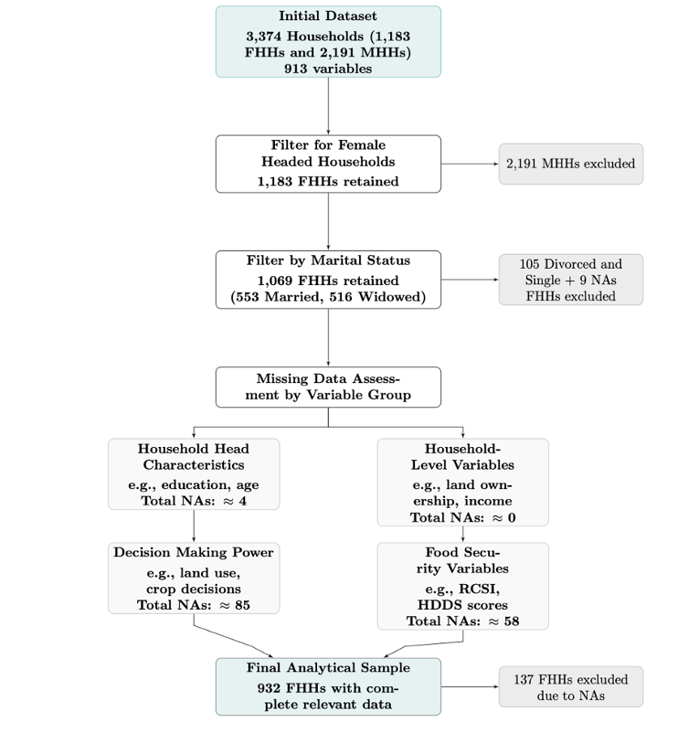

RESEARCH PROJECT · MASTER'S THESIS · 2025
Empowering Women, Securing Food: How Patriarchal Norms and Marital Status Shape Women’s Access to Resources and Food Security in Syria
An econometric study of marital status, productive resources and household food security among female-headed households in conflict-affected Syria.

This thesis examines whether female household headship translates into meaningful empowerment when access to land, education and social protection remains shaped by patriarchal institutions and conflict. Using household survey data from Syria, I investigate how widowhood and productive resources relate to three complementary dimensions of food security.
Theoretical framework
Women's empowerment, marital status and food security
Household food security depends not only on food availability, but also on the resources, decision-making power and social conditions that shape access to food. In conflict-affected Syria, women may assume greater responsibility for household provisioning without gaining equivalent control over productive assets or institutional support.
Drawing on Kabeer's (1999) framework, this thesis conceptualizes women's empowerment through three interconnected dimensions: resources, agency and achievements. Land and education are potential empowerment resources; household food security is one dimension of well-being. Yet the ability to translate resources into improved outcomes depends on the social and institutional conditions under which women exercise agency.
Marital status is a central structural condition in this process. Widowhood may increase women's household decision-making responsibilities while weakening access to assets, social legitimacy and support networks. Female headship, therefore, does not necessarily imply meaningful empowerment.

Research gap, question & hypotheses
Research gap: Existing research has established links between women’s empowerment and household food security, but less attention has been paid to how marital status shapes women’s ability to access and benefit from productive resources in patriarchal, conflict-affected settings. This study examines whether widowhood is associated with food insecurity and whether land and education offer different benefits to married and widowed female household heads.
Research question: How does marital status shape the relationship between women's access to resources and household food security in conflict-affected Syria?
- H1: Widowed women are more likely to experience household food insecurity than married women.
- H2a: Land ownership is associated with reduced household food insecurity.
- H2b: The food-security benefits of land ownership are stronger for widowed women.
- H3a: Women's education is associated with reduced household food insecurity.
- H3b: The food-security benefits of education are stronger for widowed women.
Data and methods
Data and analytical sample
The study uses anonymized agricultural household survey data from five Syrian governorates—Hama, Deir-ez-Zor, Aleppo, Homs and Rural Damascus—collected in March 2023 and March 2024. The source data follow households over two waves; the thesis analyses the combined observations using pooled regressions.
Starting from 3,374 household observations, I restricted the sample to female-headed households, then to married or widowed heads, and excluded records with incomplete relevant variables. The final analytical sample comprises 932 observations.

Variables and measurement
Food security is multidimensional, so I constructed and analysed three indicators capturing different aspects of household food access and responses to scarcity:
Empirical strategy
I estimated pooled ordinary least squares (OLS) models for three food-security outcomes (HDDS, FCS and rCSI). Two main specifications are presented below.
1. Baseline model
Examines the association between marital status and household food security, controlling for governorate, education, age, land ownership and receipt of aid.
2. Land interaction model
Introduces an interaction between marital status and logged land ownership to test whether the association between land resources and food security differs between married and widowed female household heads.
2. Education interaction model
This additional specification introduces an interaction between marital status and education to assess whether the association between educational attainment and household food security differs between married and widowed female household heads. It tests whether education may serve as a compensatory resource for widows facing structural barriers to economic and social opportunities.
Standard errors are clustered at the household level to account for repeated observations across survey waves. The estimates represent conditional associations, not causal effects.
Key findings
- Widowhood and food consumption: widowed household heads had FCS scores approximately 3.4 points lower than married heads in the adjusted pooled model (β = −3.4; p = 0.004).
- Land and dietary diversity: a one-unit increase in logged land size was associated with 0.14 higher HDDS (p = 0.017).
- Land and coping strategies: logged land size was associated with 0.44 lower rCSI (p = 0.020), consistent with reduced reliance on food-related coping behaviours.
- Education and interactions: education was not consistently associated with improved food-security outcomes; the hypothesized additional benefits of land and education for widows were not robustly supported by the interaction models.


Discussion & limitations
The findings suggest that household headship alone does not guarantee access to the resources needed for food security. Widowhood is associated with greater vulnerability in food consumption, while land access appears to be an important protective resource. The absence of consistent education effects points to constraints on translating individual capabilities into material welfare in a conflict-affected setting.
These results are observational. Pooled OLS cannot eliminate unobserved household characteristics or selection bias, and clustering standard errors does not resolve those identification limitations. The sample is restricted to female-headed agricultural households in selected Syrian governorates, limiting generalizability. The results motivate gender-sensitive support that addresses access to productive resources alongside wider institutional barriers.